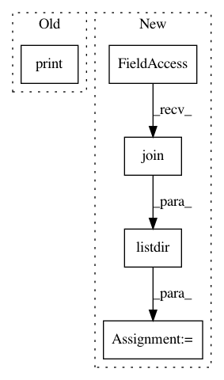

7d66d48a57519e5c5f8e76de94156c8de9924dd0,test/automl/test_start_automl.py,AutoMLTest,test_automl_outputs,#AutoMLTest#,73
Before Change
proc.wait()
// Start time
print(os.listdir(os.path.join(output, ".auto-sklearn")))
start_time_file_path = os.path.join(output, ".auto-sklearn",
"start_time_100")
with open(start_time_file_path, "r") as fh:
start_time = float(fh.read())
After Change
"predictions_ensemble"))
self.assertIn("predictions_ensemble_100_00001.npy", fixture)
fixture = os.listdir(os.path.join(output, ".auto-sklearn",
"models"))
self.assertIn("100.1.model", fixture)
fixture = os.listdir(os.path.join(output, ".auto-sklearn",
"ensembles"))
In pattern: SUPERPATTERN
Frequency: 3
Non-data size: 5
Instances
Project Name: automl/auto-sklearn
Commit Name: 7d66d48a57519e5c5f8e76de94156c8de9924dd0
Time: 2016-02-11
Author: feurerm@informatik.uni-freiburg.de
File Name: test/automl/test_start_automl.py
Class Name: AutoMLTest
Method Name: test_automl_outputs
Project Name: google/unrestricted-adversarial-examples
Commit Name: 43900d342b205d66d196313d0f77c534df246a7f
Time: 2018-09-02
Author: nottombrown@gmail.com
File Name: bird-or-bicycle/bird_or_bicyle/dataset.py
Class Name:
Method Name: _crop_and_resize_images
Project Name: google/unrestricted-adversarial-examples
Commit Name: aa2697505fa98dd4d6040e78ed0545bab707157b
Time: 2018-08-28
Author: nottombrown@gmail.com
File Name: tcu-images/tcu_images/dataset.py
Class Name:
Method Name: verify_dataset_integrity